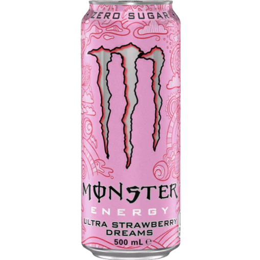
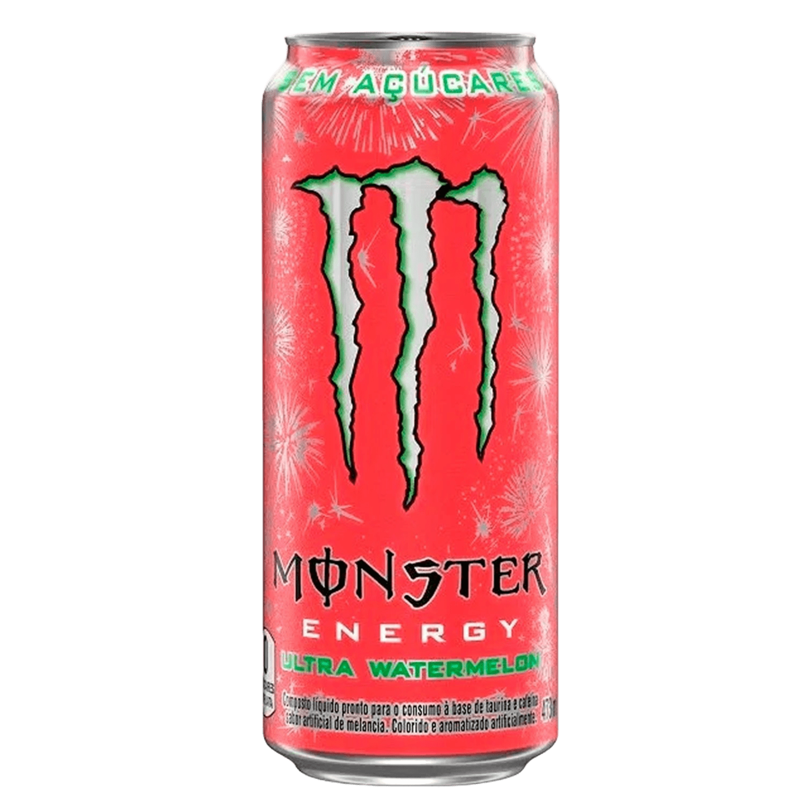

01 Monster Energy / Original
Unleash
the energy.
O ícone preto e verde. Energia bruta, atitude sem filtro.
160 mg cafeína500 ml volume
Independent concept01 / 04
Portfólio01 Monster Energy / Original
O ícone preto e verde. Energia bruta, atitude sem filtro.
02 Juice Monster / Mango Loco
Uma colisão elétrica de manga, azul profundo e calor latino.
03 Monster Ultra / Strawberry Dreams
Morango etéreo por fora. A mesma intensidade por dentro.
04 Monster Ultra / Watermelon
Melancia cortante. Vermelho no limite. Zero espaço para o comum.



Montes Labs / Field note 01
Quatro identidades conectadas por um único sistema visual — cada uma com ritmo, luz e matéria próprios.
Interactive flavor lab
Monster Energy / Original
O clássico que começou tudo. Intenso, direto e impossível de confundir.
The concept ends. Your project starts.
Experiências digitais desenvolvidas para transformar atenção em desejo, presença em impacto e marcas em memória.